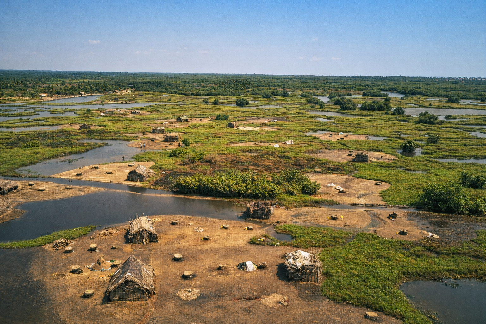
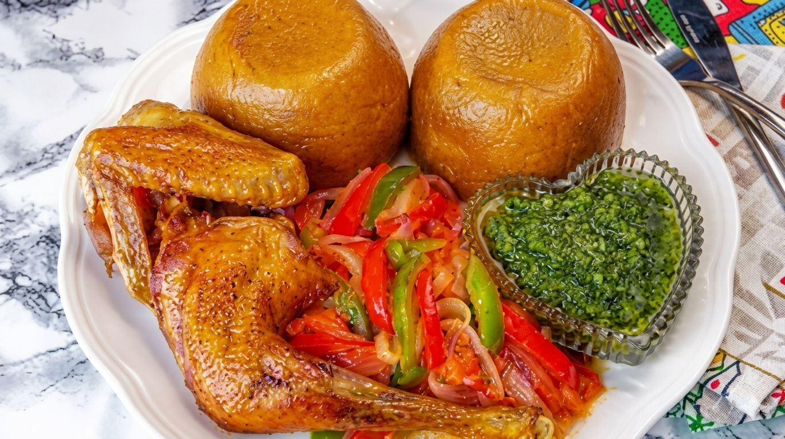
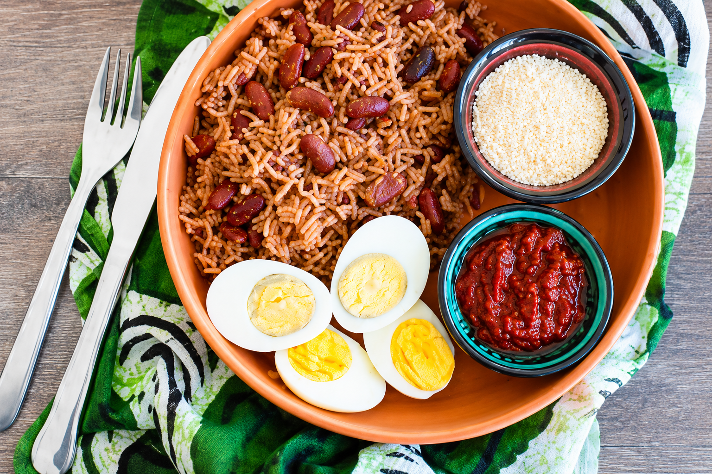
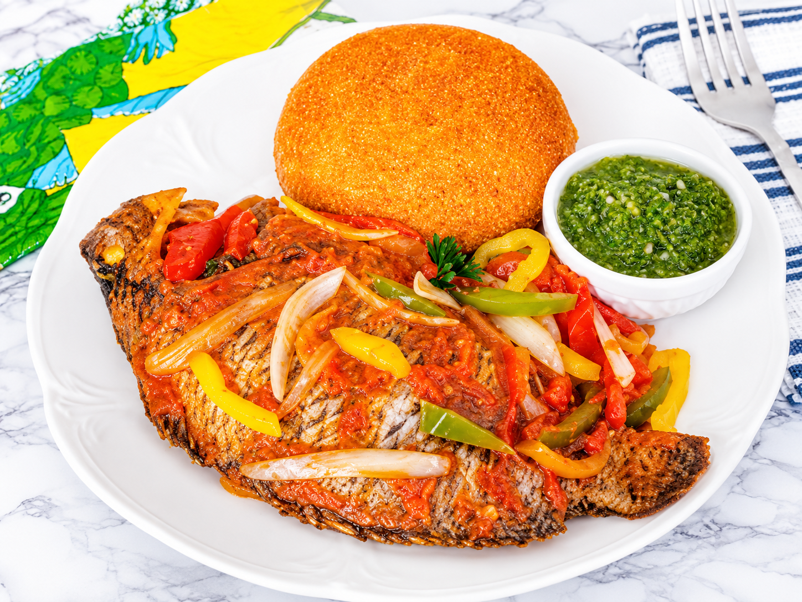
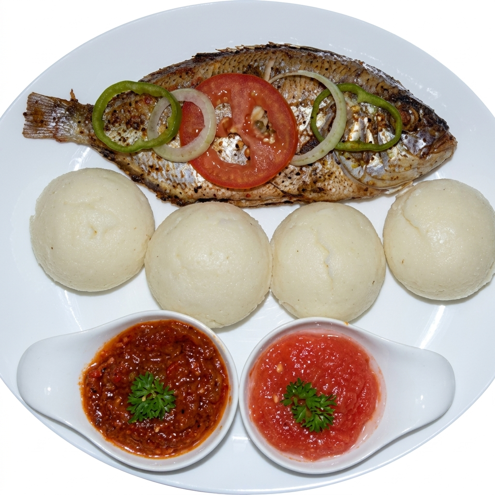
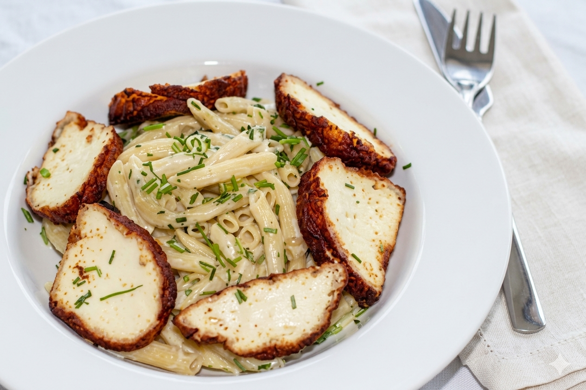
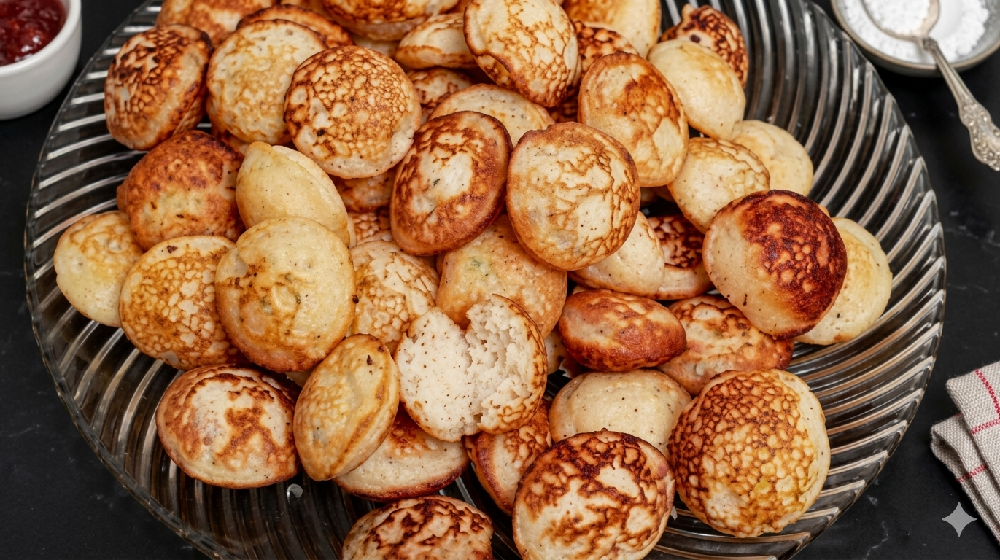
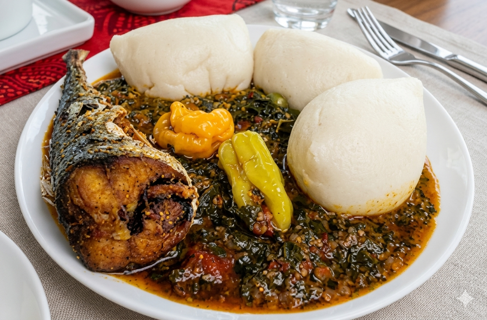
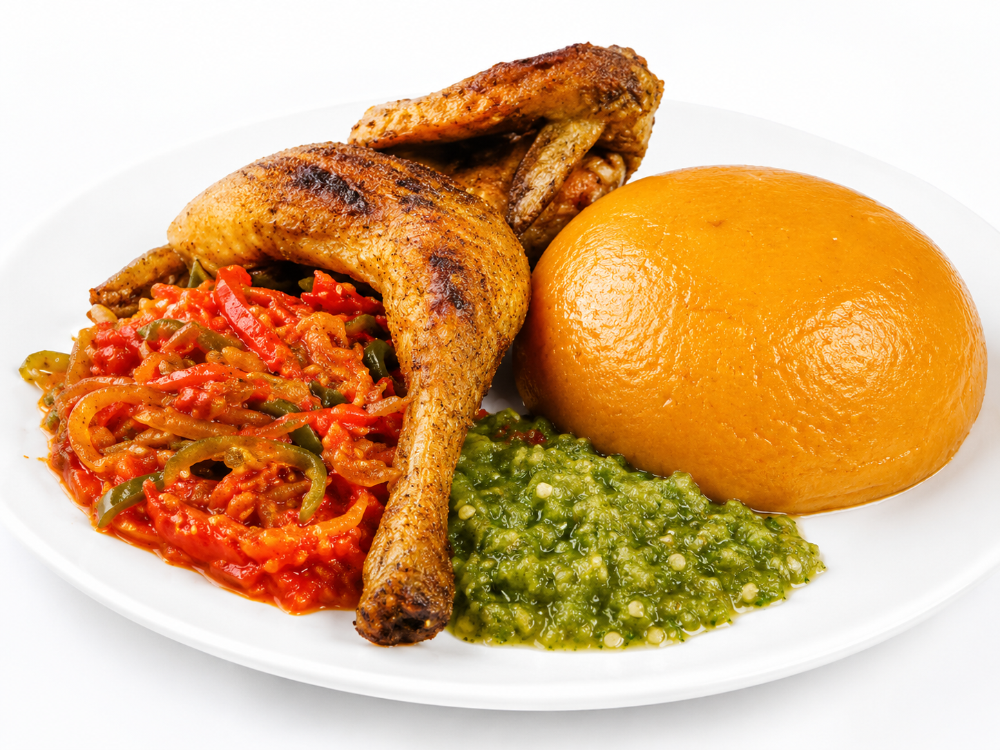

Ouidah
15k
Porte du Non-Retour
Mémorial poignant de la traite négrière

RetourLe berceau des traditions et la force de l'histoire
Ancien Royaume de Dahomey, le Bénin est un pays d'une richesse historique et spirituelle exceptionnelle. Berceau du culte Vaudou, il offre un voyage unique entre mémoire douloureuse de la traite négrière à Ouidah, splendeur des palais royaux d'Abomey et vie paisible des cités lacustres. Du sud côtier aux montagnes de l'Atacora, le Bénin est une terre d'accueil et d'authenticité.
Mémorial poignant de la traite négrière

Cœur historique de l'ancien Dahomey

Cité lacustre millénaire sur pilotis

Le plus beau safari d'Afrique de l'Ouest

Plages infinies et embouchure du fleuve Mono

Le plus grand marché à ciel ouvert de la région

Capitale aux multiples influences coloniales

Lieu sacré du culte Vaudou

Un parcours de mémoire classé à l'UNESCO

Eaux cristallines au pied de la chaîne de l'Atacora

Maisons-forteresses uniques au monde

Le phare de l'art contemporain africain

Réserve de biosphère et mangrove majestueuse

Espace sauvage transfrontalier mythique

Thermalisme et légendes du lac Ahémé
La puissance des ancêtres et la fierté des rois.
Le Bénin est une terre où le passé est omniprésent. Des légendes des Amazones du Dahomey à la spiritualité Vaudou, la culture béninoise est d'une profondeur rare. C'est ici qu'on comprend l'Afrique des traditions restée intacte, mais aussi une nation qui regarde vers l'avenir avec son dynamisme artistique et son hospitalité légendaire (La Tchéké).
Une philosophie de vie basée sur l'harmonie entre l'homme, la nature et le divin.
L'héritage d'une organisation militaire et politique qui a marqué l'Afrique de l'Ouest.
Des rythmes percutants qui accompagnent les moments forts de la vie sociale et religieuse.
Le savoir-faire des bronziers et des tisserands d'Abomey transmis de génération en génération.

Ramenez l'âme du Bénin chez vous. Des objets d'artisanat chargés d'histoire et de symbolisme.
 En stock
En stock
Toile racontant les exploits des anciens rois du Dahomey, faite à la main.
 En stock
En stock
Représentation d'une Amazone ou d'un guerrier selon la technique de la cire perdue.
 En stock
En stock
Bijoux traditionnels en perles de rocaille, inspirés par les ornements des dignitaires.
 En stock
En stock
100% pur et artisanal, issu des coopératives de femmes de l'Atacora.
 Art unique
Art unique
Pièce de collection en bois d'iroko, représentant l'hommage aux "Mères".

Vase décoratif en terre cuite rouge, fabriqué selon des techniques millénaires.

Centre-ville, Cotonou

Lagune & Mer, Ouidah

Front de mer, Cotonou

Quartier Haie Vive, Cotonou

Place de l'Indépendance, Cotonou

Natitingou, Atacora
La cuisine béninoise est réputée pour sa saveur et sa variété, utilisant largement le maïs, l'igname et une multitude de sauces épicées.

Pâte de maïs rouge à la tomate servie avec du poulet braisé.

Mélange de riz et de haricots, un classique du quotidien.

Spécialité du sud : gari et friture de poisson frais.
.png)
Le plat d'excellence du nord, servi avec une sauce arachide ou graine.

Petits pains de riz et maïs fermentés, légèrement sucrés.

Fromage de vache traditionnel des Peuls, souvent frit.

Galettes de riz frites, délicieuses au petit-déjeuner.

Pâte de maïs fermentée servie avec une sauce gluante ou de la friture.

Pâte de maïs cuite dans une sauce tomate épicée.

Boisson onctueuse et vitaminée extraite du fruit du baobab.

Sauce fraîche à base de tomates, oignons et piment.

Délice des côtes béninoises, préparé avec des épices locales.
Le Bénin vibre au rythme de festivals uniques qui célèbrent son identité profonde.
Chaque 10 janvier, le pays célèbre ses racines spirituelles avec ferveur (Ouidah).
Grande fête traditionnelle du peuple Baatonu à Nikki (Nord-Bénin).
Célébration du design et de l'art contemporain béninois à Cotonou.
C'est la période idéale pour visiter tout le pays et surtout faire le safari à la Pendjari (animaux visibles aux points d'eau).
Une accalmie bienvenue dans les pluies, idéale pour profiter de la côte sans les fortes chaleurs.
Le Bénin est un pays paisible. Évitez simplement les zones frontalières éloignées du nord extrême. La courtoisie est la règle.
Vaccin fièvre jaune obligatoire. Traitement antipaludéen recommandé. Ne buvez que de l'eau en bouteille.
Le Français est officiel. Le Fon (sud), le Yoruba et le Bariba (nord) sont les langues nationales dominantes.
Franc CFA (XOF). Les distributeurs sont nombreux en ville. Prévoyez du cash pour les marchés et les villages.
Historien & Expert Vaudou
Koffi vous fera découvrir Ouidah et Abomey avec un regard d'initié sur les cultes et l'histoire royale.
Spécialiste Lagunes & Ganvié
Sika connaît chaque recoin du lac Nokoué. Elle vous fera vivre une immersion inoubliable à Ganvié.
Expert Safari Pendjari
Bio est un traqueur hors pair. Il vous guidera en toute sécurité à la rencontre des lions et éléphants du nord.